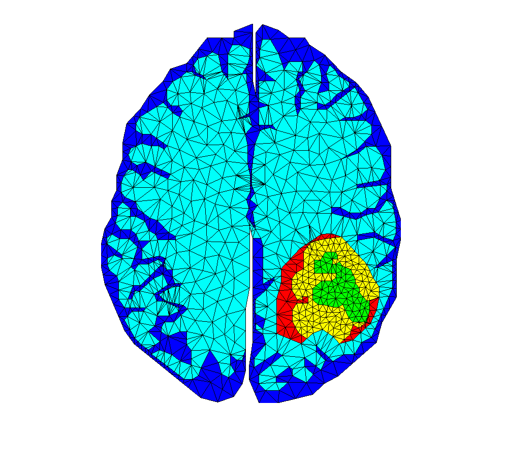
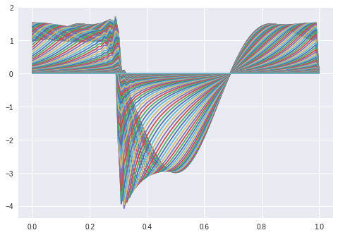
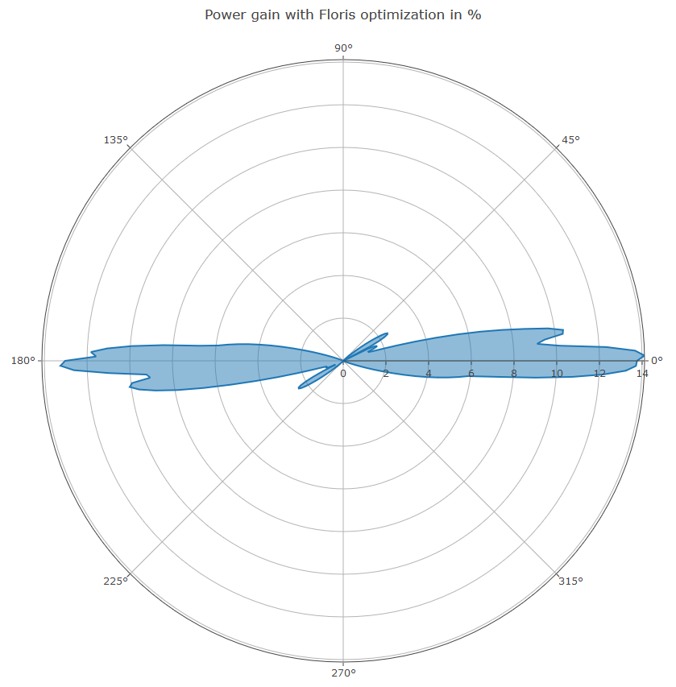
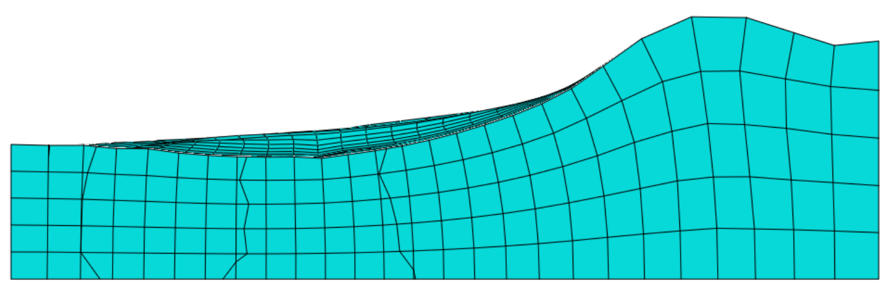
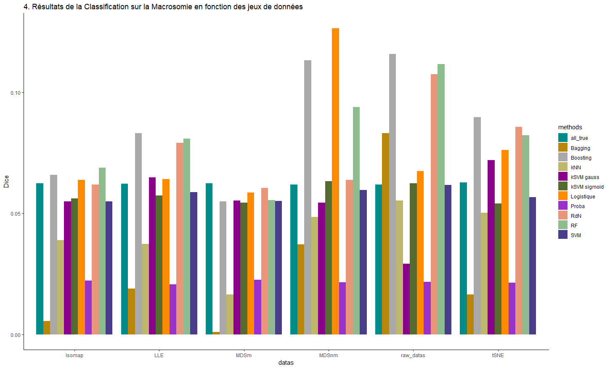

Bonjour, ici Flavien ALONZO
Doctorant en mathématiques appliquées à la santé,
Ingénieur généraliste, spécialisé en Bio-informatique et Mathématiques appliquées
Historique Projets Articles Enseignements
Historique
Doctorat Bio-mathématiques
Nantes - Laboratoire de Mathématiques Jean LerayDirecteur : Mazen Saad
Co-Encadrant : Aurelien Serandour
Ingénieur généraliste
Nantes - Ecole Centrale de NantesPrépa MPSI - MP
Tours - Lycée DescartesBaccalauréat Scientifique
La Souterraine - Lycée Raymond LœwyDoctorat Bio-mathématiques
Nantes - Ecole Centrale de Nantes
Laboratoire de Mathématiques Jean Leray
Directeur : Mazen Saad
Co-Encadrant : Aurelien Serandour
Sujet : Analyse analytique et numérique de systèmes d'équations paraboliques appliqués dans la modélisation des tumeurs gliales.
Stagiaire en recherche et développement
Zaragoza (Espagne) - Universidad de Zaragoza
Instituto Universitario de Investigacion en Ingenieria de Aragon
Encadrants : Elias Cuëto et Beatriz Moya
Stagiaire data scientist
Clermont-Ferrand - Institut PascalProjets de recherche
Simulation du comportement du Glioblastome Multiforme à partir d'IRM d'un patient
Résolution de l'équation KdV
Gain de puissance d'une ferme éolienne selon l'incidence du vent
Adaptative sloshing simulation using model reduction and GENERIC structure
Méthodes de Machine Learning appliquées à des données de périnatalité
Articles
Simulation the behaviour of Glioblastoma Multiforme based on patient MRI during treatments
Journal of Mathematical BiologyFlavien Alonzo, Mazen Saad, Aurelien Serandour et al. Simulating the behaviour of Glioblastoma Multiforme based on patient MRI during treatments, 24 June 2021, PREPRINT (Version 1) available at Research Square [https://doi.org/10.21203/rs.3.rs-654407/v1]
Enseignements
TD
Mathématiques pour l'ingénieur
2019-2022Introduction à l'analyse numérique - Méthodes directes de résolution de systèmes linéaires
Méthodes itératives de résolution de systèmes linéaires et d'approximation de valeurs propres
Optimisation avec ou sans contraintes
Probabilités
Statistiques
Interpolation et approximation - Intégration numérique
TP
Mathématiques pour l'ingénieur
2019-2022Initiation à Matlab - Equation de la chaleur 1D
Résolution d'un système linéaire tridiagonal pas plusieurs méthodes (LU, Jacobi, Gauss-Seidel)
Optimisation avec ou sans contraintes
Lois usuelles - Convergence de suites de variables aléatoires
Evaluation d'une proportion - Moindres carrés avec contraintes linéaires
Project
Projet Encadré option BioSTIC
2020-2022Encadrement du projet annuel d'un groupe d'étudiants issu de l'option BioSTIC